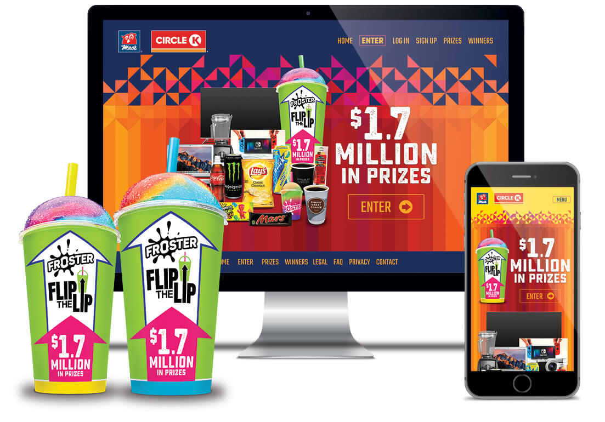
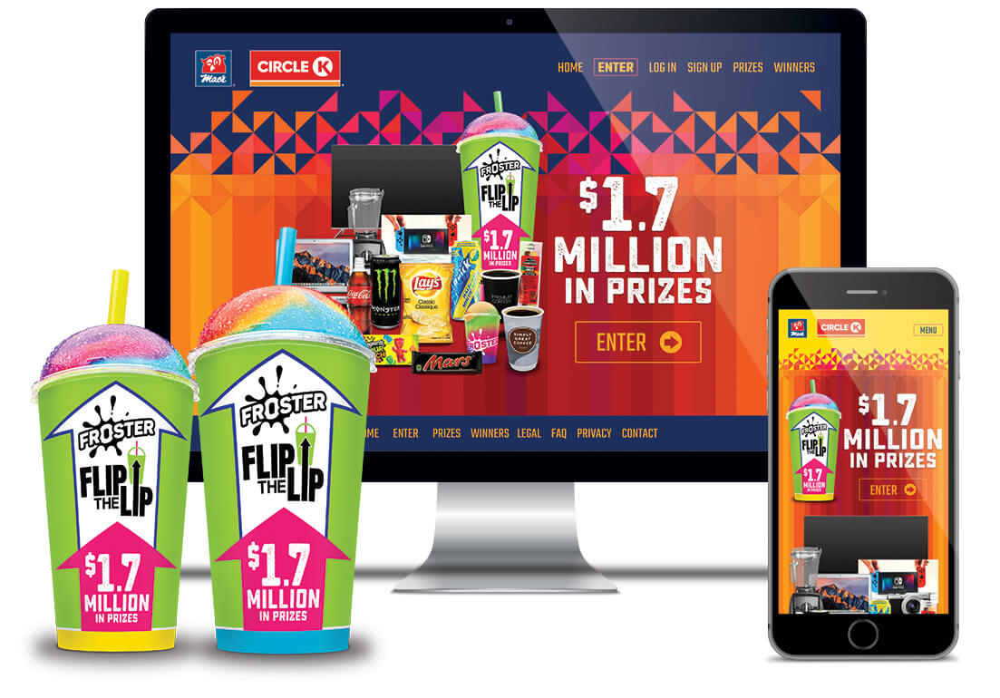

Flip The Lip Contest
Flip The Lip is a contest run twice per year in association with Mac’s Convenience Stores Inc. and Circle K Stores. Website, product design, and prize fulfillment by SIX12 Creative.
SIX12 Creative is a fast-paced marketing agency located in New Westminster, that has been my home for the past two years.
In my capacity of intermediate full stack web developer, I have built websites for various digital marketing campaigns and businesses across North America.
I have a skilled understanding of building and hosting websites from start to finish. I care about creating accessibile and responsive designs.
At SIX12, I enjoy continuously improving internal development processes, as well as researching and sharing new technologies that apply to our workflow. I love reading and writing my own documentation.
Flip The Lip is a contest run twice per year in association with Mac’s Convenience Stores Inc. and Circle K Stores. Website, product design, and prize fulfillment by SIX12 Creative.
